교육할 내용
- 교안파이썬과 시리얼 통신(PySerial) 개념
- 교안마이크로비트 파이썬 에디터 python.microbit.org/v/3
- 교안AI 프롬프트로 송수신 코드 → LED·서보 제어 코드 연동
주의점
- 주영욱 대표학생들이 파이썬을 짤 수 있는 게 아니다. 문법 강의를 하지 않는다
- 주영욱 대표5차시와 중복이다. 5차시를 짧게 끝내고 바로 이 차시로 온다
중요한 점
- 주영욱 대표프롬프트 예: “마이크로비트에서 쓸 수 있는 LED 켜고 끄는 코드 만들어 줘”, “마이크로비트가 작동하는 파이썬 코드로 짜 줘”
- 주영욱 대표한 팀 안에서 누구는 Claude, 누구는 Gemini, 누구는 ChatGPT로 — 코드가 같은지 다른지, 어느 코드가 실제로 돌아가는지 비교
- 주영욱 대표VIBE 코딩 커리큘럼의 ‘프롬프트로 코드 만들기 · 여러 AI 비교’ 모듈을 그대로 끼워 넣을 수 있다
주영욱 대표 코멘트
주영욱 대표애들이 파이썬을 짤 수 있는 게 아니잖아요. 그냥 프롬프트로 하는 거예요. 그러면 앞 수업이랑 결국 중복이에요. 통화 39:52
주영욱 대표6장으로 넘어와서 ‘마이크로비트가 원하는 걸 하는 파이썬 코드로 짜 줘’ 이렇게 각자 해 보라고 했어요. 통화 40:26
주영욱 대표Gemini한테도, ChatGPT한테도, Claude한테도 물어보고 코드가 얼마나 다른지, 어떤 코드가 잘 작동되는지 비교해 보라고 했어요. 통화 40:52
주영욱 대표잘만 운영하면 선생님이 할 게 없어요. 교재 있으니까 해 봐라, 하는 거예요. 통화 41:25
교안 장표 19장 · 코멘트 5곳

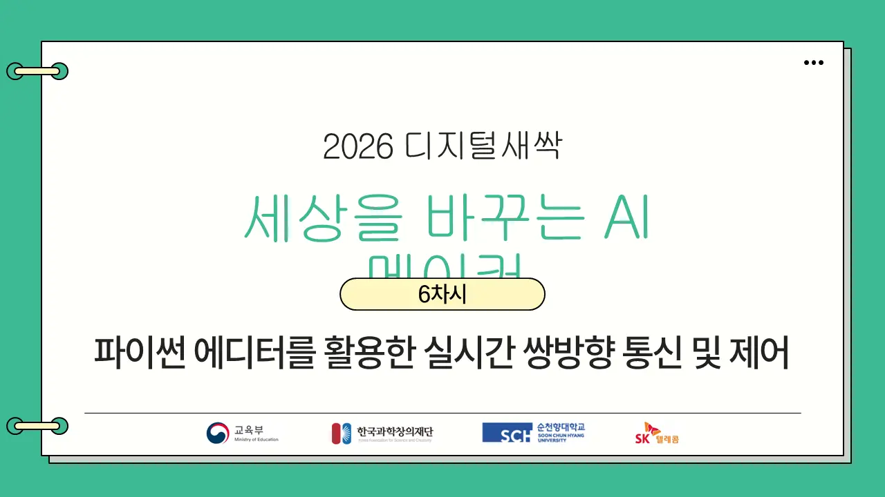

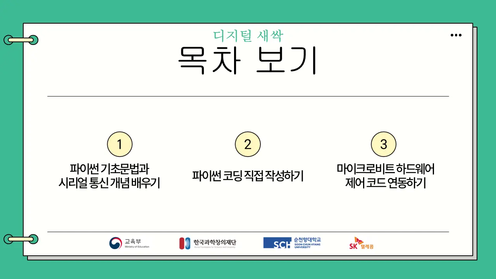

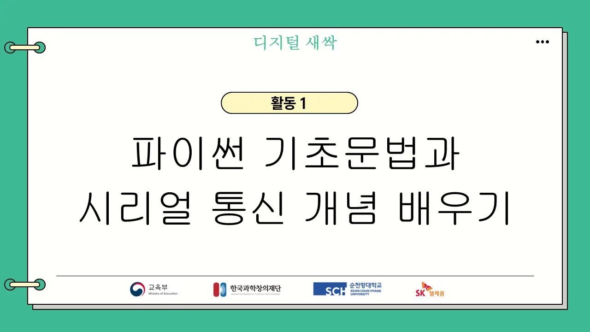

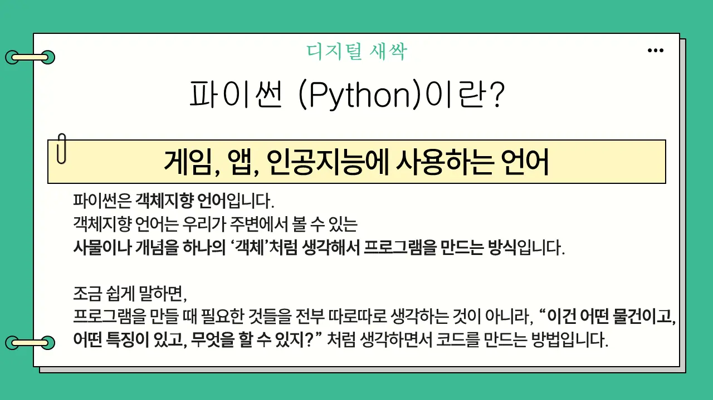
주영욱 대표객체지향 설명은 짧게. 문법 강의는 하지 않는다.

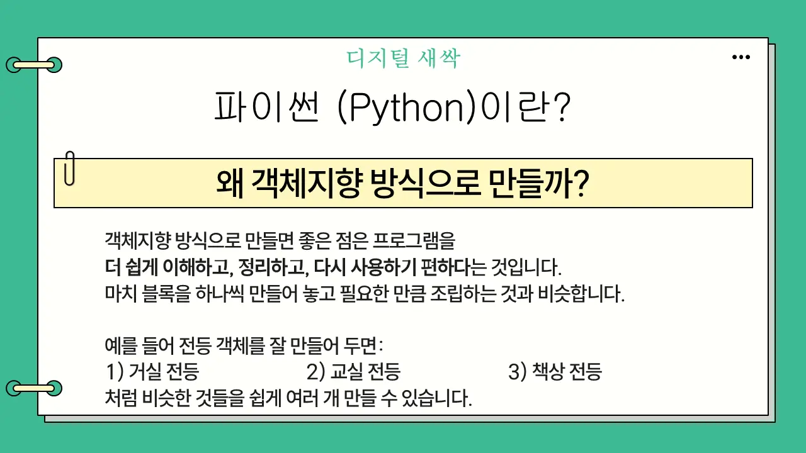

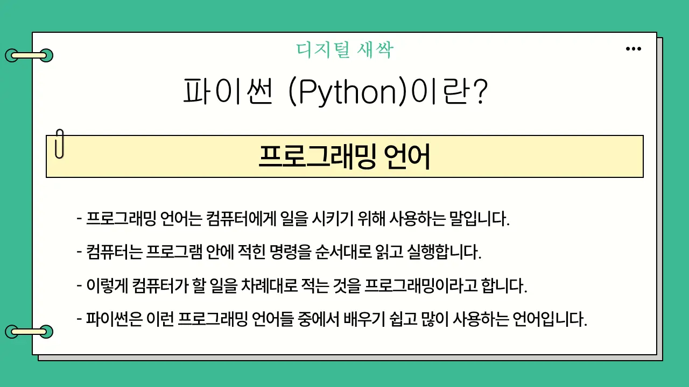

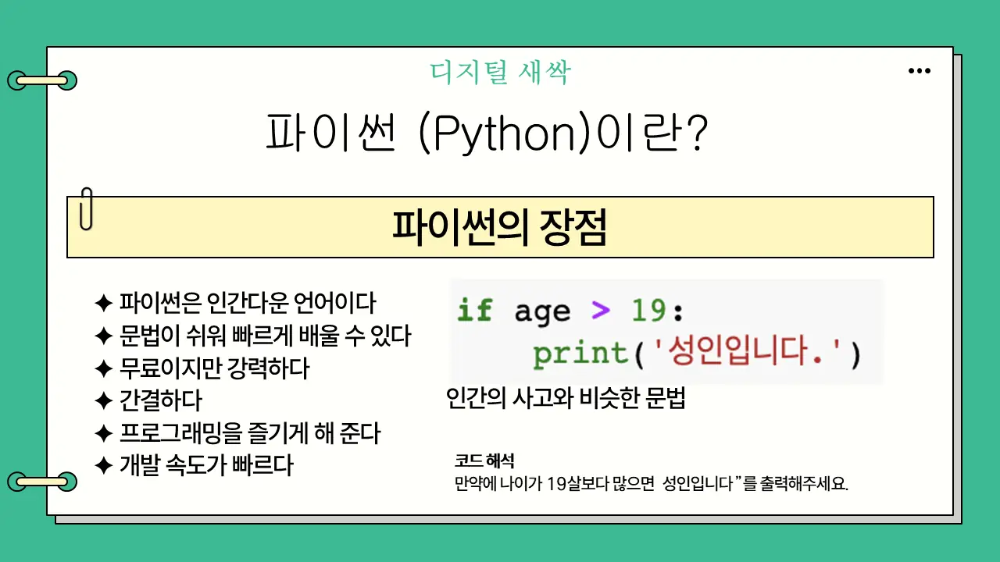

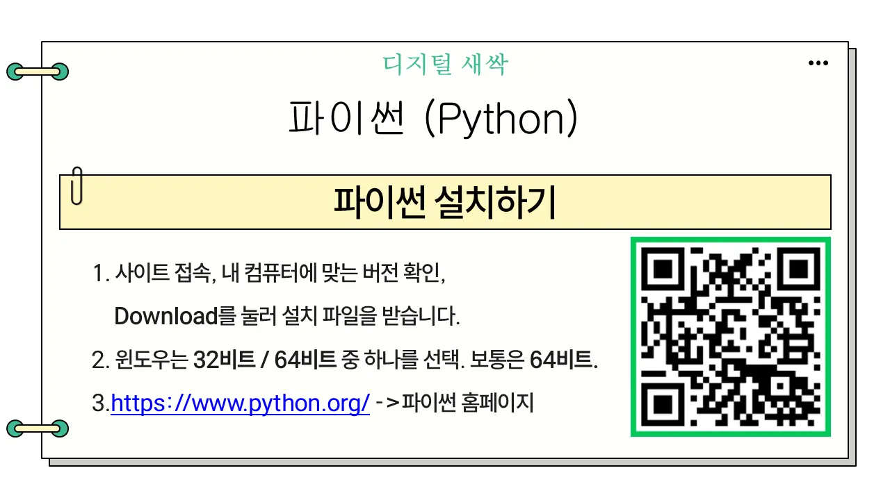

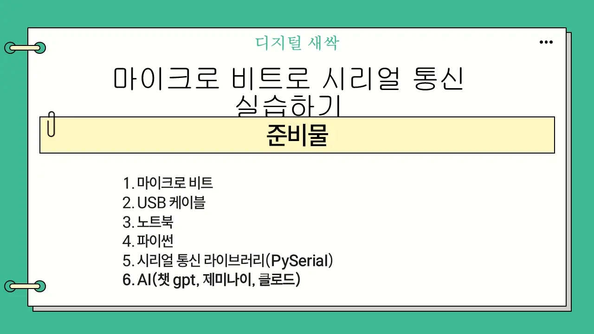

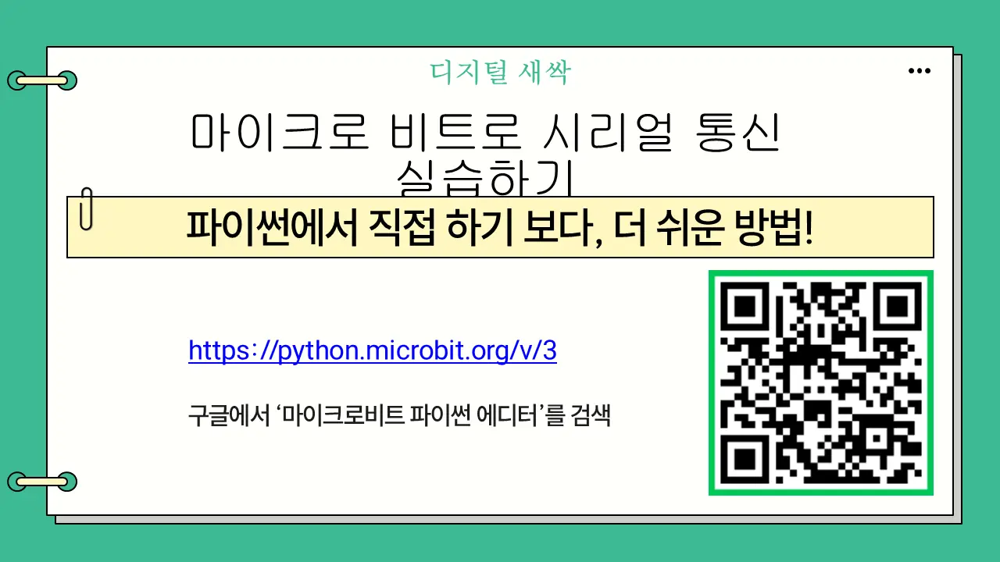
주영욱 대표에디터 주소를 칠판에. 연결 안 되면 2차시와 같은 순서로 점검.

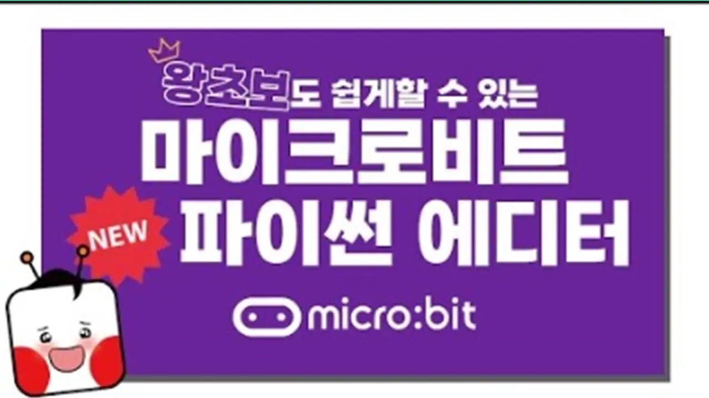

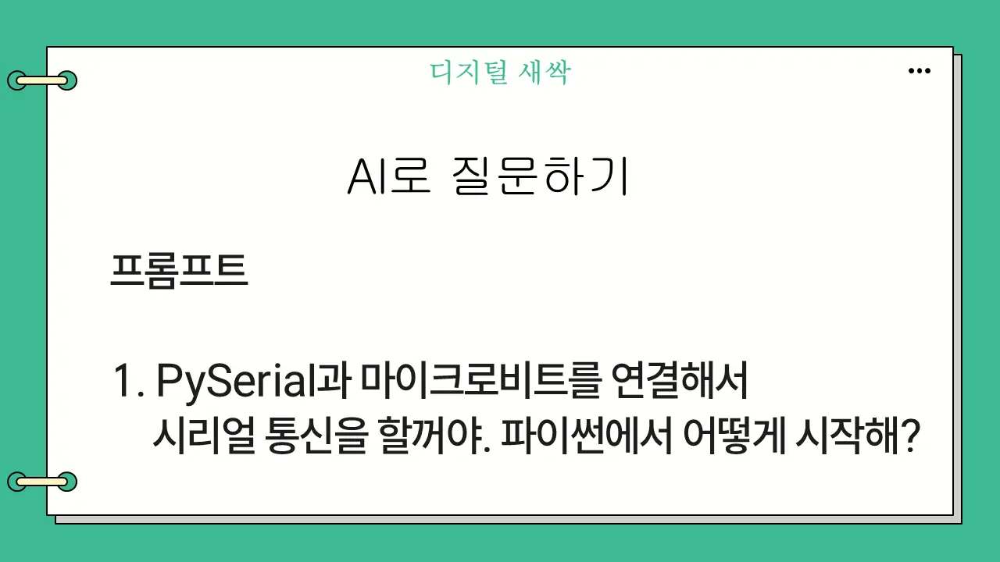
주영욱 대표프롬프트는 학생이 직접 입력. 같은 질문을 서로 다른 AI에 던지게 한다.

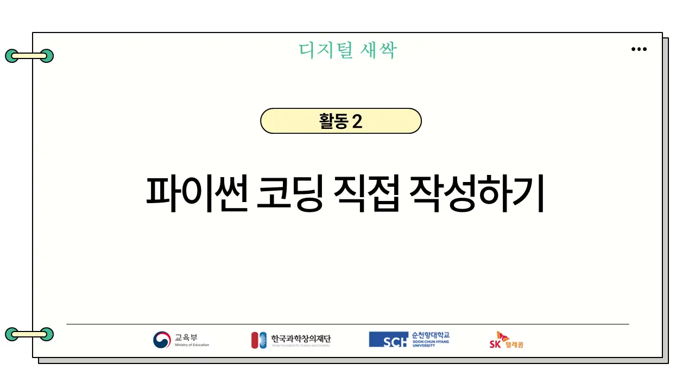

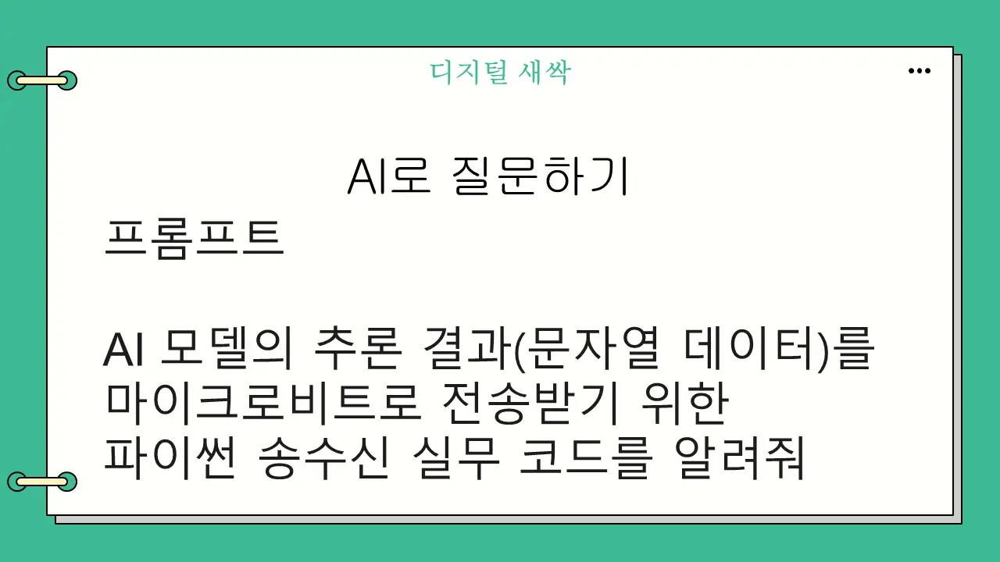
주영욱 대표결과 코드를 팀 안에서 비교 → 실제로 돌아가는 코드를 고른다.

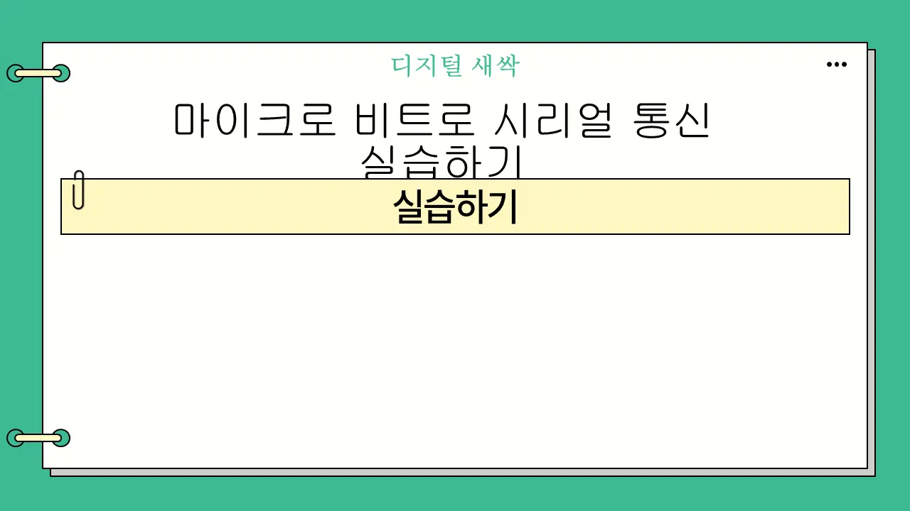

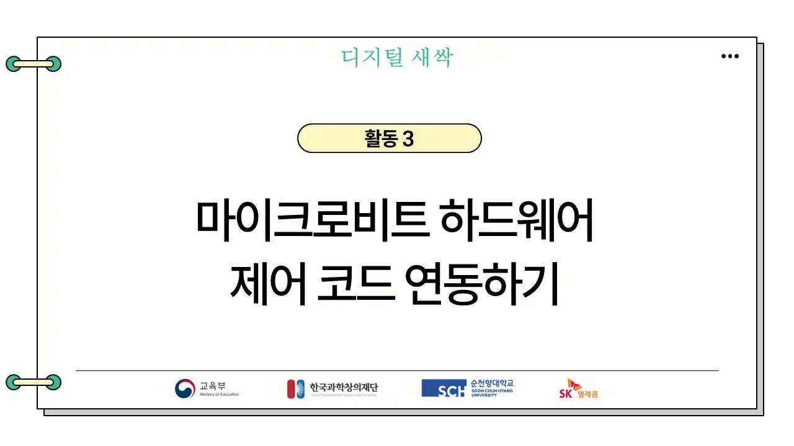

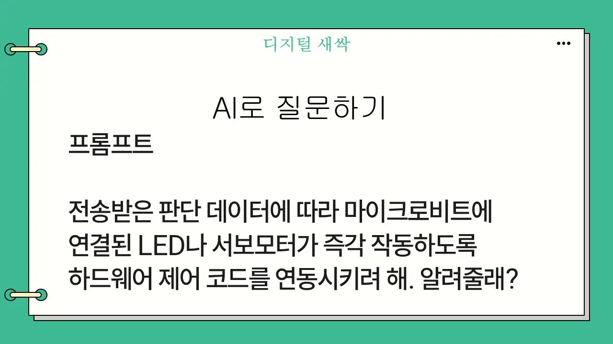
주영욱 대표하드웨어 제어 연동도 같은 방식. 작동 여부로 판단.

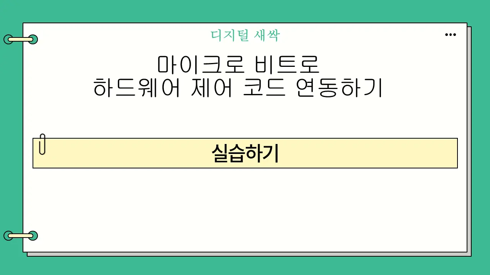